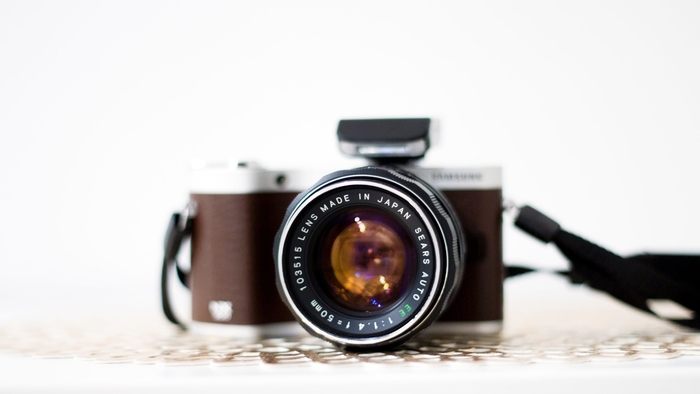

LA MEUILLEURE SELECTION
DES CAMERAS VINTAGE
Vente de caméras vintage

A PROPOS
Depuis son ouverture, OriCam propose à ses
clients une grande sélection de produits à des prix
abordables. Notre boutique en ligne est devenue
synonime de qualité et nous nous assurons de
vous fournir d'excellents caméras vintage.
Consultez notre boutique et commencez
votre shopping.
Boutique